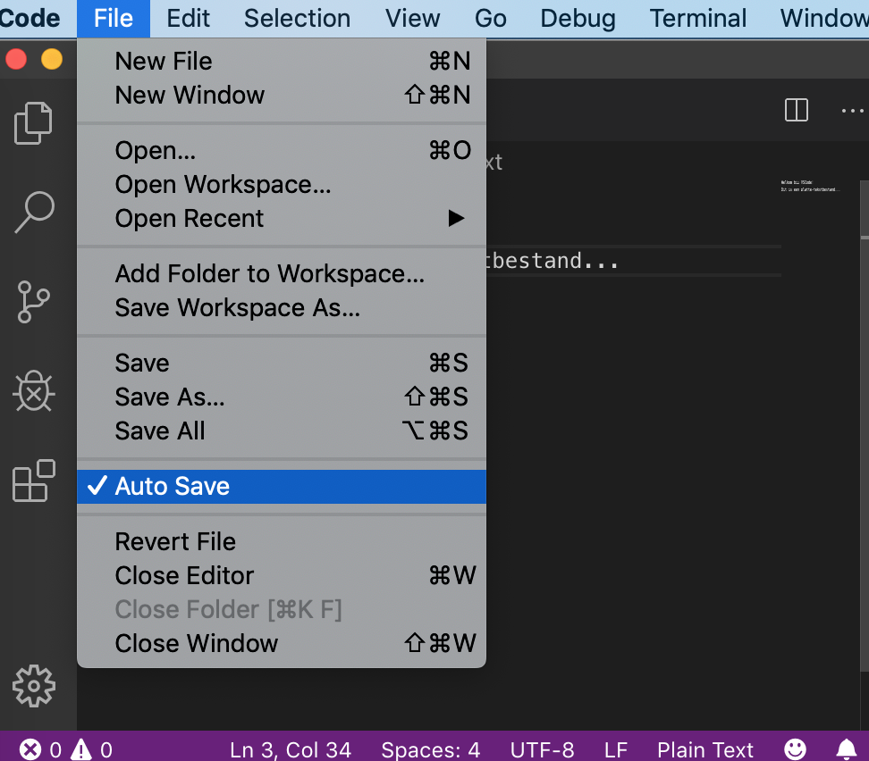
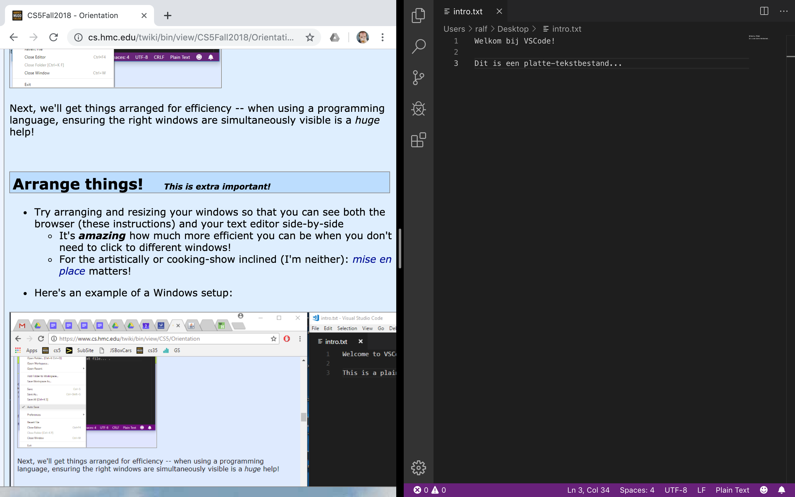
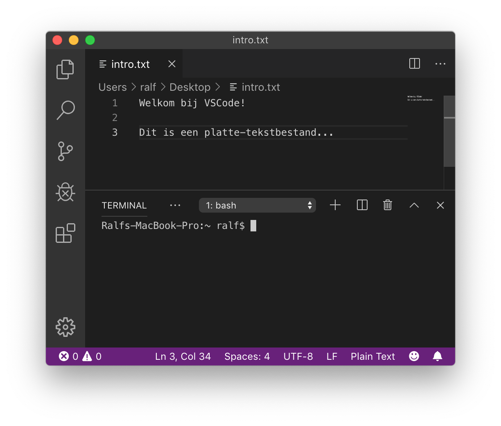

Terminal, teksteditors en Python¶
Naam |
Beschrijving |
|---|---|
Onderwerp |
Een eerste kennismaking met de terminal, teksteditors en Python |
Bestandsnaam |
|
Inleveren |
Lever jouw bestand met de juiste bestandsnaam in op GradeScope |
Punten |
15 |
Het doel van deze opgave is om:
Te zorgen dat je IPython en een teksteditor geïnstalleerd krijgt op je computer
Om je kennis te laten maken met een command-line interface, het bewerken van tekstbestanden, en Python
Om een “Hallo”-programma te lezen, bewerken en uitvoeren in Python
Je uit te dagen om een aantal “vier-vieren”-problemen op te lossen in Python
Als je eerder klaar bent, kan je met iets anders aan de slag, maar je mag ook verder gaan met de rest van opgaven:
De software installeren¶
Welke software gebruiken we?¶
We gebruiken bij Programmeren I software die je misschien nog niet hebt. Je hebt de volgende programma’s nodig:
Python; wij gebruiken de versie die Anaconda Python heet (Anaconda-versie 2020.02, die bevat Python-versie 3.7). Je hebt Python 3.x nodig.
Een teksteditor; geen tekstverwerker; om je Python-bestanden te bewerken. We raden VSCode aan, een gratis, veel gebruikte tekstverwerker die beschikbaar is voor alle besturingssystemen (Mac, Windows en Linux). Als je al een favoriete teksteditor hebt, kan je die ook gebruiken.
Downloaden en installeren¶
Voor Mac-gebruikers:
Download Anaconda Python 2020.02 (met Python 3.7)
Installeer VSCode WEL als er om gevraagd wordt; de andere defaults staan goed.
Voor Windows-gebruikers:
Download Anaconda Python 2019.03 (met Python 3.7)
Installeer VSCode WEL als er om gevraagd wordt; de andere defaults staan goed.
Voor Linux-gebruikers:
Download Anaconda Python 2019.03 (met Python 3.7), vermoedelijk staan alle defaults goed.
Als hierbij VSCode niet geïnstalleerd wordt, kan je de teksteditor VSCode hier vinden en deze installeren: ook hier zullen de defaults goed staan.
Je hebt geen terminalprogramma nodig. De ingebouwde
Terminalvan Linux, of de terminal van VSCode zijn afdoende.
Wacht, ik heb Python al…¶
Geen probleem; als je Anaconda Python installeert, zou deze zonder problemen tegelijk met je andere Python-versies op je computer moeten kunnen staan.
We gebruiken in dit vak Python 3. De installatie van Anaconda bevat ook een aantal handige extra bibliotheken.
Als je eerder met Python 2 gewerkt hebt, vat deze pagina de verschillen tussen Python 2 en Python 3 samen. (Korte versie: het is grotendeels hetzelfde…)
Python in je browser uitvoeren¶
Nu de 21e eeuw goed op gang gekomen is, kan je ook Python helemaal in je browser draaien. Dit werkt niet voor elke opgave die je in dit vak krijgt, maar hier zijn een paar opties voor Python in de browser
VSCode als editor gebruiken¶
Probeer VSCode, een teksteditor.¶
Teksteditors zijn niet hetzelfde als tekstverwerkers.
Microsoft Word, Google Docs, Pages van Apple of elke andere tekstverwerker kan tekst mooi opmaken
Maar ze geven je geen rechtstreekse toegang tot de daadwerkelijke inhoud van een bestand!
Ze bevatten speciale, onzichtbare tekens met informatie over de opmaak
Aangezien programmeertalen platte tekst (strings met karakters) gebruiken, zijn (platte-)teksteditors de geschikte tool om in te programmeren!
Start dus je teksteditor op; vermoedelijk VSCode, als je die net geïnstalleerd hebt…
Sluit de introductietabs (je kan VSCode vertellen deze niet meer te tonen) en zorg dat je een “leeg bestand” (een leeg venster) ziet.
Type daarna wat tekst, zoals bijvoorbeeld:

Sla dit bestand op als
intro.txtDat kan op je bureaublad of in een speciale map voor Programmeren I; dat mag je zelf bepalen. Dit ziet er dan ongeveer zo uit:

Automatisch opslaan!; het is een goed idee om VSCode in te stellen zodat deze al je bestanden automatisch opslaat Deze optie kan je hier vinden:

We gaan nu je vensters herschikken zodat je efficiënter kan gebruiken; als je aan het programmeren bent kan het erg veel helpen als je zorgt dat de goede vensters tegelijk zichtbaar zijn!
Vensters herschikken! (Dit is belangrijk!)¶
Probeer je vensters zo te herschikken en in grootte aan te passen zodat je tegelijk je browser (met deze instructies) en je teksteditor, naast elkaar, kan zien.
Het is belachelijk hoe veel efficiënter je wordt als je niet steeds tussen vensters hoeft te wisselen.
Mocht je artistiek zijn of van kookprogramma’s houden: mise-en-place is belangrijk!
Hier is een voorbeeld van een Mac-omgeving:

en een Windows-omgeving:
Neem even een kijkje in de menu’s van VSCode. Je kan bijkvoorbeeld in View de optie Hide Status Bar en Hide Activity Bar kiezen, maar het kleurenschema veranderen is nog leuker!
Kleurenschema! Besteed niet te veel tijd hieraan, maar voel je vrij om je favoriete kleurenschema te kiezen voor VSCode (menu’s: File/Code … Preferences … Color Theme). Dit is erg leuk, misschien zelfs te leuk…
Hierna ga je een terminalvenster openen…
Het terminalvenster!¶
Terminalvenster?
De meeste interacties die we met computers hebben zijn via vensters die door het besturingssysteem aangeboden worden. Het besturingssysteem (of OS, kort voor operating system), is meestal Windows of Mac OS, maar er zijn vele andere, waarvan Linux de meest voorkomende is. Het besturingsysteem dat je gebruikt voorziet in een venstersysteem waardoor je een muis kan gebruiken, op een gebruikersvriendelijke manier kan interacteren met de computer, en zelfs films kan bekijken. De klik-en-sleepinterface van moderne venstersystemen is zeker heel erg handig!
Echter, de grafische interface is ook een gordijn, dat de gebruiker afschermt van wat er echt gebeurt met de bestanden op het systeem. Het is een krachtige en nuttige vaardigheid om een duidelijk idee te hebben van hoe bestanden gebruikt worden achter het gordijn van het venstersysteem. De terminal is een programma dat “achter” het gordijn kijkt. Hij gebruikt tekstcommando’s op de zogeheten “command line” (of commandoregel) om bestanden en acties op je computer aan te spreken.
Je op je gemak voelen op de command line is vaak handig om programma’s te maken. Het besturingssysteem is erg geschikt voor het gebruiken van programma’s!
Start je terminal op!
Trek nu het “gordijn” van je besturingsysteem weg door naar de teksteditor VSCode te gaan en in het menu daarvan View en dan Terminal te kiezen. Je scherm wordt nu opgesplitst:

De bovenste helft is nog steeds de teksteditor.
De onderste helft is nu je terminalvenster. De terminal heeft vele namen:
De terminal
De shell
De command line
Als dit de eerste keer is dat je de terminal gebruikt, goed bezig!
IPython opstarten…¶
In het volgende deel laten we zien hoe je de command line kan gebruiken; dit is erg handig!
Start eerst ipython.
Doe dit door eerst te zorgen dat het terminalvenster de focus heeft, en type dan
ipython
op de prompt van de terminal. Elk terminalcommando wordt pas uitgevoerd nadat je op enter drukt, dus doe dat nu.
Als ipython niet gevonden wordt, dan
kan het zijn dat het niet geïnstalleerd is; de instructies hiervoor vind je een stukje omhoog…
kan het zijn dat je Windows gebruikt en Windows niet kan vinden waar ipython geïnstalleerd was (dit komt vaker voor)
als je denkt dat dit het probleem is, kan je onderstaand commando kopiëren of overtypen:
C:\Users\gebruiker\Anaconda3\scripts\ipython3.exe
… vervang wel
gebruikerdoor je Windows-gebruikersnaam
als je er niet uit komt, kan je het aan je docent vragen!
Voor in de toekomst kan het handig zijn om de locatie van ipython en ipython3 toe te voegen aan het “PATH” van Windows; deze link legt uit hoe dat moet. De locatie die je moet toevoegen is C:\Users\gebruiker\Anaconda3\scripts\, waarbij je gebruiker moet vervangen door je eigen gebruikersnaam. Vraag het gerust als je hulp nodig hebt hierbij!
De terminal en de command-line¶
Alles wat je kan doen met de vensters van je besturingssyteem kan je ook met de terminal en de command-line doen. (Sterker, je kan nog veel meer met de command line doen…)
Bij dit vak heb je drie terminalcommando’s nodig. We behandelen ze alledrie kort. Hier is een kort overzicht:
pwd; kort voor print working directory. Het drukt je huidige locatie (map) af.ls; kort voor list (files). Het drukt een lijst af van alle bestanden in de huidige locatie.cd; kort voor change directory. Het laat je van map naar map door je computer navigeren.
pwd¶
Eerst zie je de prompt. De prompt is het stukje tekst aan de linkerkant dat wacht totdat je wat op de command line typt:

Het commando pwd is een afkorting van print working directory`*. Het drukt je huidige locatie (map) af. Probeer het:

Je ziet de locatie waarin je terminal en command line op dit moment draaien. Waarschijnlijk zal je een iets ander resulaat zien, behalve als je naam toevallig misja is.
Op Windows zal de uitvoer van pwd als volgt zijn:

Merk ook op dat een volgende prompt verschenen is, die op een volgend commando wacht…
De uitvoer is de naam van de map waar je je momenteel bevindt in de terminal. “Map” en “directory” betekenen hetzelfde.
De slashes / scheiden submappen van de map waar ze in zitten. Op Windows zie je meestal backslashes \ of dubbele backslashes; dit verschil is niet belangrijk.
In dit voorbeeld is de gebruiker in een submap met de naam misja, in een map met de naam home op de harde schijf. Dit is een voorbeeld van een “home directory”.
Je zit waarschijnlijk in je eigen home directory (en je zal de volledige padnaam zien).
Hierna gaan we kijken wat we hier kunnen vinden met het commando ls…
ls: het list-commando¶
Het commando ls staat voor list.
Als je ls uitvoert maakt dit een lijst van alle bestanden en mappen in je huidige directory. Een voorbeelduitvoer van ls is:

De uitvoer is een lijst van alle bestanden en (sub)mappen in de huidige directory (Ter herinnering, “directory” en “map” zijn hetzelfde; de begrippen worden beide gebruikt.)
Aangezien dit een Mac is, zie je een aantal submappen die standaard aanwezig zijn in elke home directory in Mac OS, en een aantal extra dingen. In Windows ziet het er wat anders uit:

Probeer het commando om een lijst van de namen van bestanden en submappen in je huidige directory te zien in de terminal.
Hierna ga je door de directory’s heen “bewegen” met cd…
cd: het change-directory-commando¶
Het commando cd is het belangrijkste. Het staat voor change directory.
Het commando cd laat je van je huidige map naar andere mappen (directory’s) op je computer navigeren. Om het te gebruiken, moet je weten waar je heen wilt gaan!
Je kan bijvoorbeeld het bureaublad (desktop) proberen… typ dus cd Desktop in. Hier is een voorbeeld:

Er is niet veel gebeurd… totdat je pwd intypt en ziet dat je ergens anders bent:

Als je nu ls typt zouden er veel meer bestanden kunnen zijn; dat hangt er een beetje vanaf hoe rommelig je bureaublad is! Probeer het maar! Hier is een voorbeeld van mogelijke uitvoer:

Je eigen resultaten kunnen natuurlijk anders zijn…
Je gaat je nu “omhoog” verplaatsen in de directorystructuur…
cd ..: een map “omhoog” gaan¶
Ok, je bent nu naar het bureaublad ge-cd’d, maar hoe ga je terug?!
De speciale directorynaam met twee punten achter elkaar .. betekent “één directory omhoog”.
Als je dus cd .. intypt en op return drukt ben je terug in de map die je bureaublad bevat. Probeer maar:

Probeer daarna pwd en ls. Misschien valt het je op dat twee van de genoemde mappen .. (één directory “omhoog”) en ., die verwijst naar de huidige directory, zijn.
Oefenen!¶
Probeer deze commando’s, maar dan voor je eigen computer. Misschien wordt de directory niet zonder meer getoond. Gebruik in dat geval pwd!

Dat is alles! Je kan nu de command line gebruiken. Er zijn een paar erg handige shortcuts die de command line veel efficiënter maken; efficiënter dan de drag-en-drop-vensterinterface! Een paar voorbeelden:
tab completion Typ
cd Desals je in je home directory staat en druk op de tab-toets. De command line zal je commando proberen aan te vullen. Ervaren (en luie!) gebruikers zullen lange namen bijna altijd met tab afmaken, in plaats van ze te typen. Het kan je veel tijd schelen!pijltje omhoog en pijltje omlaag De pijltje-omhoog- en pijltje-omlaag-toetsen onthouden wat je eerder gedaan hebt. Nadat je een commando hebt gebruikt, kan je deze met pijltje-omhoog terughalen. Je kan het ook bewerken (pijltje-links en pijltje-rechts werken hier ook) als je een fout maakt.
Ok! We zijn nu klaar voor Python. We gaan dat doen met ipython.
Python!¶
Python is een programmeertaal, en wordt soms een scripttaal genoemd. Scripttalen hebben een interactive command line.
Sterker nog, je hebt zojuist de command line van Python gebruikt!
Je kan experimenteren met Python via de command line van ipython.
De “prompt” vertelt je dat Python klaar voor de start is.
Je kan bijvoorbeeld
6*7proberen als je eerste berekening op de prompt.Waarschuwing: dit kan tot diepe inzichten leiden!
Hier is het voorbeeld:

Als alles tot nu toe werkt, kun je wat grotere berekeningen proberen…
Je kan proberen een googol (tien tot de macht honderd) te berekenen. Google is (ongeveer) naar dit getal vernoemd.
De machtsverheffingsoperator in Python is twee sterretjes
**.Je kan dus op de prompt het volgende typen:
10**100

Ok… maar we kunnen nog verder gaan! (Merk op: dit is eigenlijk GEEN goed idee) Als je dus boos bent op je computer of zin hebt om ipython, of zelfs je hele computer, te laten crashen, kan je het vragen om een googolplex, tien tot de macht googol, te laten berekenen:

Dit gaat niet werken. Het is echt geen goed idee: je moet vermoedelijk in ieder geval Python geforceerd stoppen en opnieuw starten, en je computer wordt totdat je dat doet mogelijk erg langzaam.
Het laat wel zien hoe makkelijk het is om de grenzen van je computer te bereiken!
ALS je dit om wat voor reden dan ook toch wilt testen, kan je de berekening annuleren door op Ctrl-C te drukken, of door de terminal te sluiten met het kruisje in de rechterbovenhoek, of door de hele VSCode-applicatie te sluiten, of door de powerknop van je computer ingedrukt te houden, of door de stekker en de batterij eruit te trekken…

Met
KeyboardInteruptgeeft Python aan om welke reden het de bewerking heeft afgebroken en dit is natuurlijk de Ctrl-C toetscombinatie geweest.
We gaan nu door voor de minder roekelozen. Kopieer en plak (of typ) deze regel Python-code:
print("Nul is", 4+4-4-4)
Je zou deze uitvoer moeten zien:
Nul is 0Merk op dat je precies vier vieren hebt gebruikt om de numerieke waarde 0 te maken. Hier is een voorbeeld van de uitvoer:

Dit idee uitbreiden is de volgende, en belangrijkste, uitdaging van het practicum van deze week
Eerst gaan we kijken hoe we een bestand kunnen gebruiken om onze Python-code in op te slaan, zodat je deze kan inleveren…
Python in een bestand uitvoeren¶
We hebben al een teksteditor open staan!
Maak dus in een nieuwe tab een nieuw, leeg bestand (via het menu File en daaronder New File)
Plak (of typ) onderstaande code in het nieuwe bestand
# Programmeren I, Practicum 1
# Bestandsnaam: wk1ex1.py
# Naam:
# Probleemomschrijving: het vier-vierenprobleem
from math import *
print("Nul is", 4+4-4-4)
Sla dit bestand op als wk1ex1.py op je bureaublad
Hierna kan je je Python-programma’s overal opslaan; het is handig om ze te organiseren in mappen.
Maar voor dit practicum gaan we ervan uit dat je het bestand op je bureaublad hebt opgeslagen.
Vergeet niet om de extensie
.pytoe te voegenAls je het bestand opslaat met de extensie
.py(zoals we dat noemen), zie je dat de Python-code gekleurd wordt.Dit wordt ook wel syntax highlighting genoemd
Als je code niet kleurt, vraag het ons! Het is belangrijk dat je deze kleurrijke aanwijzingen hebt voor de structuur van je programma. Hier is een voorbeeld:

Windows-gebruikers: stel Windows in om extensies te tonen!
Als je Windows gebruikt, is het nodig dat je het tonen van bestandsextensies (zoals
.py,.txten.doc) aanzet, in ieder geval tijdens deze twee blokken.Het kan verwarrend zijn als Windows de extensies verbergt, omdat de
.py- of.txt-extensie die je nodig hebt er wel of niet kan zijn.Als je mappen in Windows de bestandsextensie
.pyniet tonen, zet dan alle bestandsextensies aan door de instructies op deze pagina te volgen
Een bestand uitvoeren!
Om een bestand uit te voeren, moet je weer naar de terminal gaan.
Zorg dat
ipythondraaitType
lsom de bestanden in de huidige directory te zienZorg dat je je bestand
wk1ex1.pyziet!Als je hem niet zien, gebruik dan
cd ..ofcd Desktopof andere combinaties om naar de juiste directory te gaan. Vraag om hulp als je het bestand niet kan vinden!
Typ op de prompt van ipython
run wk1ex1.py(je kan hier tab completion voor gebruiken)Dit voert het bestand
wk1ex1.pyuit.Als alles goed gaat wordt het programma uitgevoerd en zie je de uitvoer.
Vraag het ons als dit niet gebeurt!
Je kan nu je bestand bewerken, opnieuw opslaan en pijltje omhoog drukken om het opnieuw uit te voeren. Fantasisch! Hier is een voorbeeld:

De opgave: Vier vieren!¶
Het vier-vierenprobleem! Voeg nu een aantal regels toe die lijken op die met nul om de waardes van
0tot en met20te berekenen met precies vier vieren. (Je kan ook een voldoende halen als je er een aantal overslaat waar je niet uitkomt!) Je mag alle rekenkundige bewerkingen van Python gebruiken:+optellen-aftrekken (of getal negatief maken)*vermenigvuldigen/delen( )haakjes om de volgorde van de berekening aan te passen**machtsverheffen
Resultaten met een decimale punt:
1.0,2.0, enz. zijn geen probleem!Je mag ook
44of4.4gebruiken, die ieder als twee vieren tellen,of
.4, die als één vier telt.of
sqrt, bijvoorbeeldsqrt(4)(of andere wortels)De waarde van
sqrt(4), de wortel van 4, is dat getal wat je met zichzelf moet vermenigvuldigen om 4 te krijgen.2*2 == 4, dussqrt(4) == 2. Een ander voorbeeld:sqrt(9) == 3, want3*3 == 9.
of
factorial, bijvoorbeeldfactorial(4)(of andere faculteiten)De waarde van
factorial(4), 4 faculteit (ook wel geschreven als 4!) is4*3*2*1, dus24. Net zo isfactorial(2)gelijk aan2*1, dus2, enfactorial(5)gelijk aan5*4*3*2*1, dus120.
sqrtenfactorialkomen allebei uit de modulemathvan Pythonterzijde, de regel
from math import *zorgt dat deze module beschikbaar is in de codeDit is hoe het resultaat, maar niet je broncode, eruit komt te zien.
Nul is 0 Een is 1 Twee is 2 Drie is 3 Vier is 4 Vijf is 5 Zes is 6 Zeven is 7 Acht is 8 Negen is 9 Tien is 10 Elf is 11 Twaalf is 12 Dertien is 13 Veertien is 14 Vijftien is 15 Zestien is 16 Zeventien is 17 Achttien is 18 Negentien is 19 Twintig is 20
Misschien vind je de vier-vierenpuzzle verslavend, frustrerend, of allebei!
Tip: vergeet
sqrtenfactorialniet!(Terzijde) De vier-vierenpuzzle is verbazingwekkend oud. Hier is bijvoorbeeld een stukje uit een artikel van Martin Gardner in Scientific American erover:

Bonuskarma: als je wilt, mag je verder gaan dan 20.
We willen dit niet te veel aanmoedigen (er zijn andere dingen om te doen!)
Je bestand wk1ex1.py inleveren¶
Als je je resultaten hebt kan je je bestand
wk1ex1.pyinleveren.Bij dit vak lever je je uitwerkingen in via GradeScope.
De bestandsnaam maakt uit! Zorg ervoor dat je bestand
wk1ex1.pyheet.Dit is met het cijfer
1, niet de kleine letter L
Geef het bij het inleveren aan als je met iemand hebt samengewerkt
Deze opgave moet je alleen maken, zodat je in ieder geval zelf een werkende Python-installatie hebt.
Belangrijk! Als je een verbeterde versie wilt inleveren, kan dat tot aan de inleverdeadline.
Alleen de nieuwste versie wordt beoordeeld.
Een interactief programma uitvoeren¶
Het practicum is nog niet af! Om je voor te bereiden op de rest van het huiswerk, kan je proberen dit langere, interactive Python-programma uit te voeren.
Maak een nieuw bestand aan met de naam wk1ex2a.py en plak de volgende startcode er in:
import time # includes a library named time
import random # includes a library named random
def rps():
"""This plays a game of rock-paper-scissors
Dutch version (or a variant of that game ...)
inputs: no inputs (prompted text doesn't count as input)
outputs: no outputs (printing doesn't count as output)
"""
name = input("Hoi...wat is jouw naam? ")
print()
print("Hmmm...")
print()
if name == "Johan" or name == "Marjan":
print('Ik ben "offline". Probeer het later.')
elif name == "Piet":
print("Bedoel je Riet?")
time.sleep(1)
print("Nee?")
time.sleep(1)
print("Oh.")
else:
print("Welkom, ", name)
my_choice = random.choice(["steen", "papier", "schaar"])
print("Trouwens, ik koos ", my_choice)
Laad dit bestand en voer het uit met
run wk1ex2a.pyAls dat gelukt is, zie je helemaal geen bericht verschijnen
De code van dit bestand zit in een functie met de naam
rps()Om de functie uit te voeren (nadat het bestand geladen is) kan je
rps()typen bij de prompt en op enter drukken.Als het lukt, top! (Als het niet lukt, vraag het ons.) Hier is hoe het eruit ziet net voordat de functie uitgevoerd wordt:

Omgaan met fouten!¶
Om te zien hoe Python met fouten omgaat, kan je één van de twee gelijktekens
=weghalen in de regel metelifzodat de regel
elif name = 'Bart':wordtProbeer dan het bestand opnieuw te laden met
run wk1ex2a.pyPython zal je vertellen dat er een “syntax error” is en je de gelegenheid geven de fout op te lossen
Pas het aan! Maak andere aanpassingen aan het programma zodat
Het een andere melding afdrukt als de gebruiker jouw naam invoert (of een andere naam)
Vergeet niet het programma uit te voeren nadat je aanpassingen gemaakt hebt!
De volgende huiswerkopgave is om dit programma aan te passen zodat het het spel steen, papier, schaar (of iets gelijkends) speeld.
… en de opgave daarna breidt dat idee uit tot een compleet tekstavontuur
Vragen? Problemen? Vraag het ons! Of vraag het aan je buurman of buurvrouw, als je wilt.
Je hoeft dit bestand
wk1ex2a.pyniet in te leveren.Maar je bent nu wel klaar om dit interactieve programma uit te breiden naar het volledige spel steen, papier, schaar.
Als je hiermee verder wilt gaan, ga dan naar de opgave over Rochambeau
De opdracht is klaar!¶
Als alles goed werkt ben je klaar met deze opdracht!
Als je eerder klaar bent, kan je met andere dingen aan de slag.
Je mag ook verder gaan met de rest van de opdrachten.